**Mondes 3D TD1 - Sarah RAZAFINDRAKOTO**
Rayons primaires
================
Génération des rayons
---------------------
La création du rayon (sampleRay) : Le but est de simuler la vue de la caméra. Pour chaque pixel de l'image,
on crée un rayon qui part de l'œil de la caméra et traverse le pixel pour entrer dans la scène.
Les valeurs alpha et beta servent à dire au rayon s'il doit aller plutôt à gauche, à droite,
en haut ou en bas pour bien passer par le centre du pixel.
Trouver l'objet visible (Scene::intersect) : Comme un rayon peut traverser plusieurs objets (par exemple une sphère devant une autre),
on doit savoir lequel on voit vraiment. La fonction intersect regarde tous les objets de la scène un par un.
Elle ne garde que celui qui est le plus proche de la caméra (celui qui a la plus petite distance t).
Dessiner l'image (Viewer::render) : C'est la fonction principale qui fabrique l'image finale.
Elle parcourt chaque pixel de l'image. Pour chaque case, elle demande à la caméra de lancer un rayon,
puis elle demande à l'intégrateur de calculer la couleur de l'objet touché. Enfin, elle colorie le pixel avec cette couleur.
Sphères
-------
Pour savoir si un rayon touche une sphère, on utilise une équation mathématique.
En remplaçant la position du rayon dans la formule de la sphère, on obtient une équation du second degré (at2+bt+c=0).
Le discriminant nous dit combien de fois le rayon coupe la sphère :
* S'il est négatif, le rayon passe à côté.
* S'il est positif, le rayon traverse la sphère (il entre et il sort).
Quand il y a deux solutions, on choisit toujours la plus petite racine positive.
C'est elle qui correspond à l'entrée du rayon dans la sphère (le point le plus proche de nous).
On vérifie aussi que cette distance est plus petite que hit.t pour être sûr
que cette sphère n'est pas cachée par un autre objet déjà trouvé.
Difficulté rencontré : La principale difficulté a été de traduire les concepts géométriques en équations mathématiques.
Comprendre comment le discriminant permet de détecter un impact entre une ligne et une sphère n'était pas évident.
J'ai dû m'appuyer sur la correction du TD fais en classe.
Première image
--------------
Calculer la couleur (Integrator::Li) : Cette fonction décide de la couleur finale que l'on voit.
Dans sa version la plus simple, elle demande simplement à l'objet : 'Quelle est ta couleur de base (albedo) ?'
et elle renvoie cette information pour colorier le pixel.
J'ai finalisé la fonction render avec l'intégrateur Li pour obtenir ce résultat :
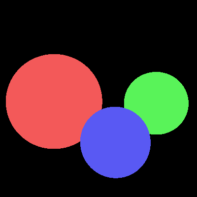
Première affichage
Plans
-----
J'ai implémenté cette fois la fonction Plane::intersect pour l'intersection entre le rayon et le plan.
Cela a été plus simple à faire que pour la sphère car j'ai juste eu à suivre le même procédé :
exprimer l'équation linéaire du plan en fonction de t.
Equation linéaire du plan :
$$
\begin{array}{c}
\text{Équation du plan : } (p - a) \cdot n = 0 \\
\text{Substitution par le rayon } r(t) = o + td : \\
((o + td) - a) \cdot n = 0 \\
(o - a) \cdot n + t(d \cdot n) = 0 \\
t(d \cdot n) = -(o - a) \cdot n \\
t = \frac{(a - o) \cdot n}{d \cdot n}
\end{array}
$$
Une fois que j'ai obtenu la valeur de t,
il suffit de vérifier si elle est positive (devant la caméra) et si elle est plus petite que l'intersection déjà enregistrée dans hit.t.
Si c'est le cas, on affiche le plan à cet endroit.
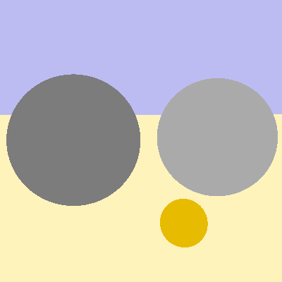
Affichage du plan
Eclairage local
===============
Normales
--------
Dans cette partie, j'ai modifié les fonctions Sphere::intersect et Plane::intersect pour qu'elles enregistrent la normale.
J'ai ensuite créé un nouvel intégrateur appelé NormalIntegrator. Le code utilise hit.normal.normalized() pour être sûr
que le vecteur de la surface a une longueur de 1. Ensuite, il transforme les coordonnées (x,y,z)
en (R,G,B) en utilisant std::abs() pour éviter les couleurs négatives,
ce qui permet de visualiser directement l'orientation des surfaces.
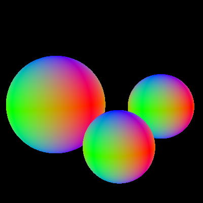
Affichage avec l'intégrateur Normals
Calcul de l'éclairage
---------------------
Pour la mise en place de l'éclairage, j'ai transcrit en code les formules données dans le sujet.
J'ai eu beaucoup de difficulté ici car je n'ai pas très bien compris le modèle de Phong ;
j'ai donc suivi les formules mathématiques données dans le sujet pour l'implémenter.
Cela s'est fait en plusieurs étapes : l'implémentation de la fonction eval pour les modèles Diffuse et Phong,
ainsi que la gestion des sources de lumière.
* Modèle diffus : C'est le modèle le plus simple. Il représente les surfaces mates. La lumière est renvoyée de manière égale dans toutes les directions. Dans le code, on retourne simplement l'albédo (la couleur de base) du matériau.
* Modèle de Phong : Ce modèle simule des objets plus réalistes avec des reflets brillants. Il additionne deux composantes :
* La partie diffuse (kd) pour la couleur de base.
* La partie spéculaire (ks) pour le reflet brillant, qui dépend de l'angle entre la direction de vue (wo) et la direction de réflexion de la lumière (r).
Difficulté rencontré : J'ai rencontré un bug lors de l'implémentation : j'avais oublié d'utiliser std::max(0.f, ...) pour le calcul de cosAlpha.
Le rendu n'était pas similaire au résultat attendu.
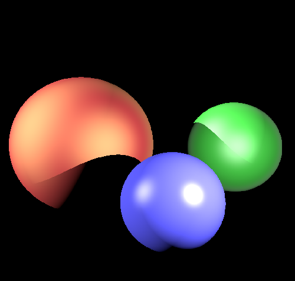
BRDF de Phong
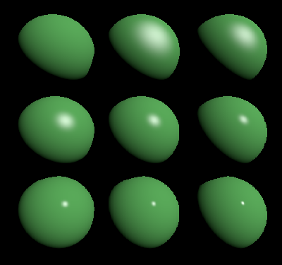
BRDF de Phong II
Rayons secondaires
==================
Ombres portées
--------------
L'ajout des ombres portées repose sur la modification de l'intégrateur Direct par l'introduction de rayons secondaires,
dits "rayons d'ombre". Pour chaque point d'intersection identifié par le rayon primaire,
un nouveau rayon est lancé en direction de chaque source lumineuse afin d'en vérifier la visibilité.
Pour pallier les problèmes d'imprécisions numériques et éviter que le rayon ne s'auto-intersecte avec sa surface d'origine,
son point de départ est décalé d'une valeur epsilon via la commande Ray shadowRay(ray.at(hit.t) + hit.normal * epsilon, wi);.
Un test de visibilité est ensuite effectué : si ce rayon d'ombre rencontre un obstacle avant d'atteindre
la source lumineuse, le point est considéré comme étant dans l'ombre. Dans le code,
cette condition est gérée par if(shadowHit.foundIntersection() && shadowHit.t < dist),
ce qui permet d'ignorer la contribution de la lumière actuelle en passant directement à la suivante
avec l'instruction continue.
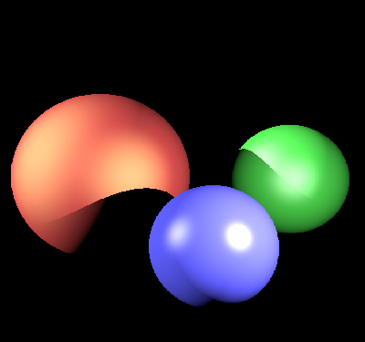
Trois sphères avec ombres portées
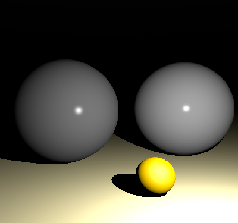
Pétanque avec ombres portées
Rebonds multiples
-----------------
Pour la gestion des rebonds multiples, j'ai implémenté l'intégrateur de Whitted.
Il reprend une grande partie de l'algorithme de l'intégrateur Direct,
mais il réagit différemment face aux matériaux réfléchissants.
Le principe est le suivant : lorsqu'un rayon touche un miroir, on calcule une direction réfléchie à l'aide de la formule :
r=d−2(d⋅n)n
On lance ensuite un nouveau rayon depuis le point d'intersection dans cette direction.
Ce rayon va à son tour intercepter des objets (ou le fond de la scène) et récupérer leur couleur.
On ajoute enfin cette couleur au pixel actuel en la multipliant par l'albédo du matériau
et par le cosinus de l'angle de réflexion. Pour éviter une boucle infinie,
j'utilise un nombre maximum de rebonds (maxRecursion).
Difficulté rencontrée : J'ai rencontré un bug où la sphère miroir restait toute noire
et ne reflétait que sa couleur de base. Ce problème venait du fait que mon code ne gérait pas
le cas où le rayon réfléchi ne touchait rien dans la scène.
J'ai dû corriger cela en ajoutant une condition pour retourner la couleur de fond :
if(!hit.foundIntersection()) {
return scene->backgroundColor;
}.
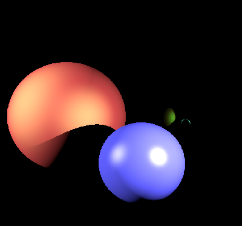
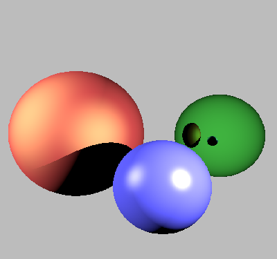
Sphère vert miroir
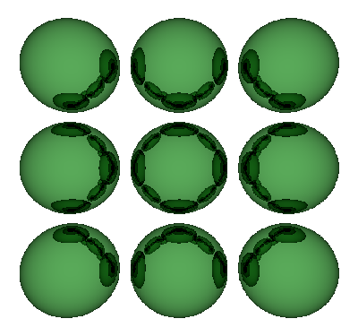
Mirrors
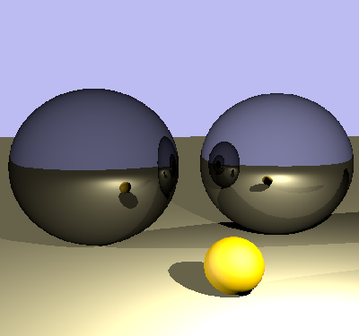
Pétanque mirrors